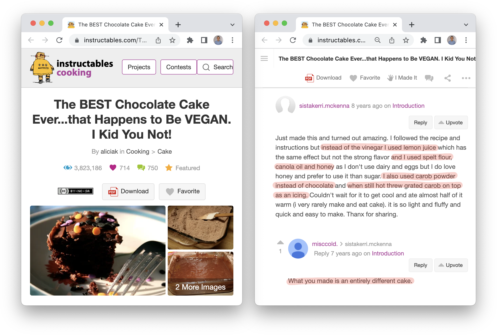
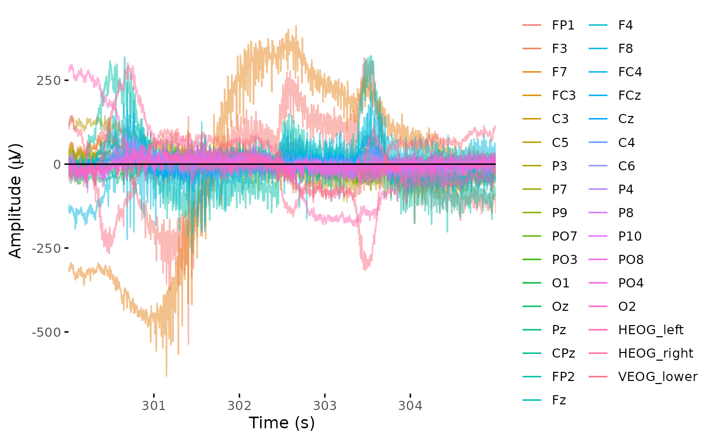
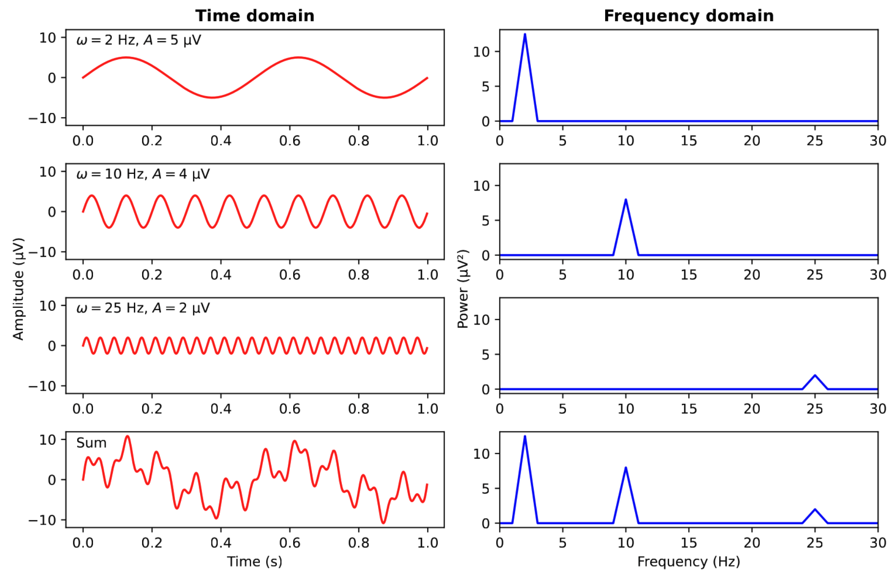
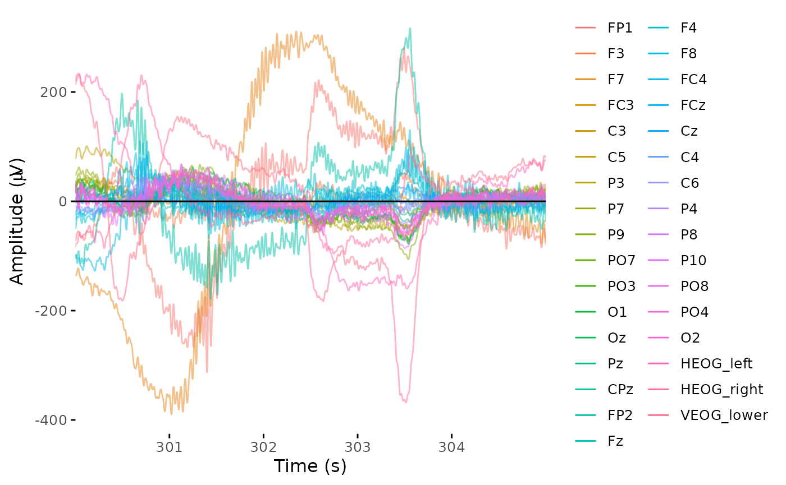

🎯 GOALS
Learning to use the R package
eegUtilsfor loading, viewing, and cleaning EEG data so that it can be used for event-related potential (ERP) analysis.
3.1 Intro: Recipes
Data analysis is like cooking: We take raw ingredients (data) and transform them according to a semi-standardized procedure into a tasty meal (an academic paper or thesis)
Every step in the recipe affords “researchers degrees of freedom” – problematic if undisclosed1

Figure: Every comment on every recipe on the internet ever.2
3.2 Loading data
-
First load required packages:
herefor working with file pathseegUtils3 for working with EEG data
Downloaded ERP CORE data is in
data/n170(see Section 2.5)Data is in BIDS format; each subject has it’s own
sub-XXX/eegsub-directoryWe need to find the
.setfile for loading the EEG data:
bids_dir <- here("data/n170")
set_file <- here(bids_dir, "sub-001/eeg/sub-001_task-N170_eeg.set")
file.exists(set_file)## [1] TRUE-
eegUtilshas functions for loading (“importing”) raw EEG data from various file formats into R, including the.setformat used by ERP CORE
(dat_raw <- import_set(set_file))## Importing from EEGLAB .set file.## Importing data from .fdt file.## EEG data
##
## Number of channels : 33
## Electrode names : FP1 F3 F7 FC3 C3 C5 P3 P7 P9 PO7 PO3 O1 Oz Pz CPz FP2 Fz F4 F8 FC4 FCz Cz C4 C6 P4 P8 P10 PO8 PO4 O2 HEOG_left HEOG_right VEOG_lower
## Sampling rate : 1024 Hz
## Reference :
## Signal length: 0 682.999 seconds- See what type of data we’ve got:
class(dat_raw)## [1] "eeg_data"-
eeg_datais a custom class defined byeegUtils– a big list with many sub-components:
str(dat_raw)## List of 8
## $ signals :'data.frame': 699392 obs. of 33 variables:
## ..$ FP1 : num [1:699392] -2503 -2502 -2502 -2503 -2504 ...
## ..$ F3 : num [1:699392] 1898 1899 1896 1897 1895 ...
## ..$ F7 : num [1:699392] 12316 12314 12310 12308 12305 ...
## ..$ FC3 : num [1:699392] 2694 2696 2695 2695 2693 ...
## ..$ C3 : num [1:699392] 3794 3794 3794 3794 3793 ...
## ..$ C5 : num [1:699392] 7308 7308 7308 7309 7308 ...
## ..$ P3 : num [1:699392] -328 -328 -329 -329 -329 ...
## ..$ P7 : num [1:699392] -471 -471 -472 -472 -473 ...
## ..$ P9 : num [1:699392] 250 252 252 249 246 ...
## ..$ PO7 : num [1:699392] -2770 -2767 -2765 -2762 -2763 ...
## ..$ PO3 : num [1:699392] -3285 -3285 -3284 -3283 -3283 ...
## ..$ O1 : num [1:699392] -6382 -6383 -6383 -6380 -6377 ...
## ..$ Oz : num [1:699392] -5855 -5852 -5848 -5846 -5847 ...
## ..$ Pz : num [1:699392] 3699 3699 3698 3699 3699 ...
## ..$ CPz : num [1:699392] 1347 1347 1345 1345 1345 ...
## ..$ FP2 : num [1:699392] 959 962 965 967 967 ...
## ..$ Fz : num [1:699392] 9392 9393 9392 9392 9391 ...
## ..$ F4 : num [1:699392] 4989 4989 4990 4990 4989 ...
## ..$ F8 : num [1:699392] 9311 9311 9311 9311 9309 ...
## ..$ FC4 : num [1:699392] 8402 8403 8404 8405 8403 ...
## ..$ FCz : num [1:699392] 5594 5595 5595 5596 5594 ...
## ..$ Cz : num [1:699392] 171 171 171 170 168 ...
## ..$ C4 : num [1:699392] 4092 4093 4093 4093 4092 ...
## ..$ C6 : num [1:699392] 1757 1758 1758 1758 1756 ...
## ..$ P4 : num [1:699392] -1050 -1049 -1050 -1050 -1051 ...
## ..$ P8 : num [1:699392] -3165 -3161 -3160 -3160 -3161 ...
## ..$ P10 : num [1:699392] 22439 22441 22442 22445 22446 ...
## ..$ PO8 : num [1:699392] -5183 -5177 -5172 -5167 -5166 ...
## ..$ PO4 : num [1:699392] -5888 -5886 -5885 -5885 -5885 ...
## ..$ O2 : num [1:699392] -4763 -4760 -4760 -4757 -4753 ...
## ..$ HEOG_left : num [1:699392] 5347 5343 5334 5327 5322 ...
## ..$ HEOG_right: num [1:699392] 4003 4003 4002 4000 3996 ...
## ..$ VEOG_lower: num [1:699392] 4875 4875 4874 4871 4868 ...
## $ srate : num 1024
## $ events : tibble [640 × 4] (S3: tbl_df/tbl/data.frame)
## ..$ event_type : num [1:640] 202 202 79 201 73 201 75 201 112 201 ...
## ..$ event_onset: num [1:640] 1682 11029 15412 16091 16998 ...
## ..$ urevent : num [1:640] 1 2 3 4 5 6 7 8 9 10 ...
## ..$ event_time : num [1:640] 1.64 10.77 15.05 15.71 16.6 ...
## $ chan_info:'data.frame': 33 obs. of 9 variables:
## ..$ electrode: chr [1:33] "FP1" "F3" "F7" "FC3" ...
## ..$ radius : num [1:33] 1 1 1 1 1 1 1 1 1 1 ...
## ..$ theta : num [1:33] NA NA NA NA NA NA NA NA NA NA ...
## ..$ phi : num [1:33] NA NA NA NA NA NA NA NA NA NA ...
## ..$ cart_x : int [1:33] NA NA NA NA NA NA NA NA NA NA ...
## ..$ cart_y : logi [1:33] NA NA NA NA NA NA ...
## ..$ cart_z : logi [1:33] NA NA NA NA NA NA ...
## ..$ x : num [1:33] NA NA NA NA NA NA NA NA NA NA ...
## ..$ y : num [1:33] NA NA NA NA NA NA NA NA NA NA ...
## $ timings : tibble [699,392 × 2] (S3: tbl_df/tbl/data.frame)
## ..$ time : num [1:699392] 0 0.000977 0.001953 0.00293 0.003906 ...
## ..$ sample: int [1:699392] 1 2 3 4 5 6 7 8 9 10 ...
## $ reference: NULL
## $ epochs : epoch_nf [1 × 3] (S3: epoch_info/tbl_df/tbl/data.frame)
## ..$ epoch : int 1
## ..$ participant_id: chr "sub-001_task-N170_eeg"
## ..$ recording : chr "sub-001_task-N170_eeg"
## $ version :Classes 'package_version', 'numeric_version' hidden list of 1
## ..$ : int [1:3] 0 7 0
## - attr(*, "class")= chr "eeg_data"-
The actual EEG data are in a data frame called
signalsEach row is one sample (time point)4
Each column is one channel (EEG electrode)
Each value is the EEG voltage (in microvolts; µV) measured at this time sample and channel
Other elements contain useful meta-information, some of which used in later sections
3.3 Viewing data
- Usually a good idea to visually check the data at the outset of data analysis and at multiple steps throughout
browse_data(dat_raw)- Check out multiple time points (“Display start time”) and switch between the “Individual” view and the “Butterfly”
- Remember to click “Done” or you will not be able run the next piece of code
✍️ EXERCISE
Inspect the data at different time points and channels. Note down any features of data you find interesting and potentially relevant to deal with in our analysis.
- Static “butterfly” plot of a chunk of data:
time_lim <- c(300, 305)
plot_butterfly(dat_raw, time_lim, baseline = time_lim)
3.4 Channel locations
For some steps (e.g., making topographic plots) we need to know the relative positions of electrodes on the scalp
Sometimes included in the raw data, but here we need to use a separate function5
dat_raw <- electrode_locations(dat_raw, montage = "biosemi64", overwrite = TRUE)## Electrodes not found: HEOG_left HEOG_right VEOG_lower
dat_raw$chan_info## # A tibble: 33 × 9
## electrode radius theta phi cart_x cart_y cart_z x y
## <chr> <dbl> <dbl> <dbl> <dbl> <dbl> <dbl> <dbl> <dbl>
## 1 FP1 1 -92 -72 -26.2 80.8 -2.97 -28.4 87.5
## 2 F3 1 -60 -51 -46.3 57.2 42.5 -37.8 46.6
## 3 F7 1 -92 -36 -68.7 49.9 -2.97 -74.4 54.1
## 4 FC3 1 -50 -28 -57.5 30.6 54.6 -44.2 23.5
## 5 C3 1 -46 0 -61.1 0 59.0 -46 0
## 6 C5 1 -69 0 -79.4 0 30.5 -69 0
## 7 P3 1 -60 51 -46.3 -57.2 42.5 -37.8 -46.6
## 8 P7 1 -92 36 -68.7 -49.9 -2.97 -74.4 -54.1
## 9 P9 1 -115 36 -62.3 -45.3 -35.9 -93.0 -67.6
## 10 PO7 1 -92 54 -49.9 -68.7 -2.97 -54.1 -74.4
## # … with 23 more rows
plot_electrodes(dat_raw, interact = TRUE)3.5 Re-referencing
During recording (“online”), each electrode is measuring the difference in voltage compared to the reference electrode (e.g., FCz)
-
During preprocessing (“offline”), we typically choose a new reference:
Average reference: Difference to the average of all scalp channels
Linked mastoids: Difference to the average of the mastoid channels (M1 and M2)

Figure: Different reference schemes.6
eog_channels <- c("HEOG_left", "HEOG_right", "VEOG_lower")
dat_reref <- eeg_reference(dat_raw, ref_chans = "average", exclude = eog_channels)3.6 Filtering
- Insight by Joseph Fourier (1768–1830): Every
complex signal can be described by a sum of sine waves
- The frequency (in Hz) of a sine wave describes how fast it repeats itself

Figure: Summing up of sine waves in the time and frequency domains.7
- The EEG too consists of different types of activity with different frequencies:
| Frequency | EEG activity |
|---|---|
| < 0.1 Hz | Electrode drift, sweat artifacts |
| 0.1–4 Hz (delta) | Slow-wave sleep |
| 4–8 Hz (theta) | Drowsiness, idling |
| 8–13 Hz (alpha) | Relaxing, inhibition |
| 13–30 Hz (beta) | Active thinking, alertness |
| 30–80 Hz (gamma) | Binding, consciousness (?) |
| 50 Hz (US: 60 Hz) | Power line noise |
| > 80 Hz | Muscle artifacts |
Most brain activity detectable with EEG happens between 0.1–30 Hz
-
Filtering is used to remove unwanted parts of the signal:
- Convert time-domain EEG into the frequency domain (Fourier transform)
- Remove (resp. attenuate) certain frequencies
A high-pass filter remove slow frequencies (e.g., < 0.1 Hz)
A low-pass filter removes fast frequencies (e.g., > 30 Hz)
A band-pass filter combines a high-pass and low-pass filter
A band-stop filter removes a narrow frequency range (e.g., around 50 Hz)
- Convert “cleaned” signal back into the time domain
dat_filt <- eeg_filter(dat_reref, low_freq = 0.1, high_freq = 30.0)## Band-pass FIR filter from 0.1 - 30 Hz## Transition bandwidth: 0.1 Hz## Filter order: 33792## Removing channel means...
plot_butterfly(dat_filt, time_lim, baseline = time_lim)## Baseline: 300 sBaseline: 305 s
✍️ EXERCISE
Use the data browser and compare the filtered data with the raw data at a certain time point. Repeat the filtering step but making one of the two cutoff frequencies more aggressive (that is, make either the lower cutoff frequency higher or the higher cutoff frequency lower). What advantages and disadvantages could this have?
...💡 NOTE: There’s a lot more to filters
While the idea of and the code for filtering looks simple, it is actually a huge topic of research and debate. There are many different types of filters and each of them has many more parameters than just their cutoff frequency (e.g., filter length, transition bandwidth, delay, direction).
Each of these parameters should be chosen such that the filter (a) removes as much of the unwanted signals as possible while (b) not distorting the part of the signal that we do care about. For example, it has been shown that using a low-pass filter with too high a cutoff (e.g., 1 Hz instead of 0.1 Hz) can introduce artificial “bumps” in the data that can be mistaken for true ERP components.8

- Let’s save our preprocessed (re-referenced and filtered) data for the next step9
deriv_dir <- here(bids_dir, "derivatives/eegUtils/sub-001/eeg")
preproc_file <- here(deriv_dir, "sub-001_task-N170_desc-preprocessed_eeg.rds")
dir.create(deriv_dir, recursive = TRUE)
saveRDS(dat_filt, preproc_file)Further reading
- Newman, A. J., Godfrey, D., & Post, R. (2022). EEG-ERP Preprocessing. In Data Science for Psychology and Neuroscience – in Python. Dalhousie University. https://neuraldatascience.io/7-eeg/erp_preprocessing.html
- Delorme, A. (2022). EEG is better left alone (p. 2022.12.03.518987). bioRxiv. https://doi.org/10.1101/2022.12.03.518987
Add-on topics
3.7 Downsampling
- The sampling rate defines the number of EEG voltages recorded per second (= Hertz)
dat_raw$srate## [1] 1024- This means that each pair of samples is less than 1 ms apart!
1 / dat_raw$srate## [1] 0.0009765625- We typically don’t need that much temporal resolution,10 so it is often useful to downsample the data
dat_downs <- eeg_downsample(dat_filt, q = 4.0) # q is the downsampling factor## Downsampling from 1024Hz to 256Hz.- This reduces our computer’s memory load and will make subsequent computations faster
show_size_mb <- function(x) format(object.size(x), units = "MB")
lapply(list(before = dat_filt, after = dat_downs), show_size_mb)## $before
## [1] "184.1 Mb"
##
## $after
## [1] "46.1 Mb"
saveRDS(dat_downs, preproc_file)
Figure: Moderate downsampling typically doesn’t affect future plots or statistical results.11